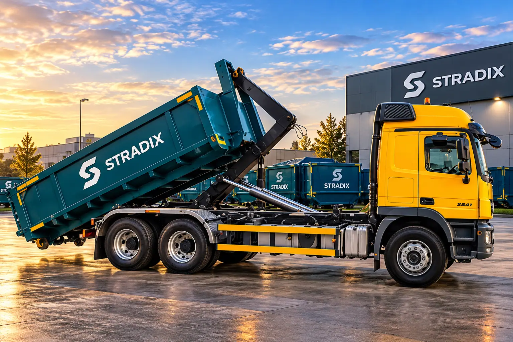
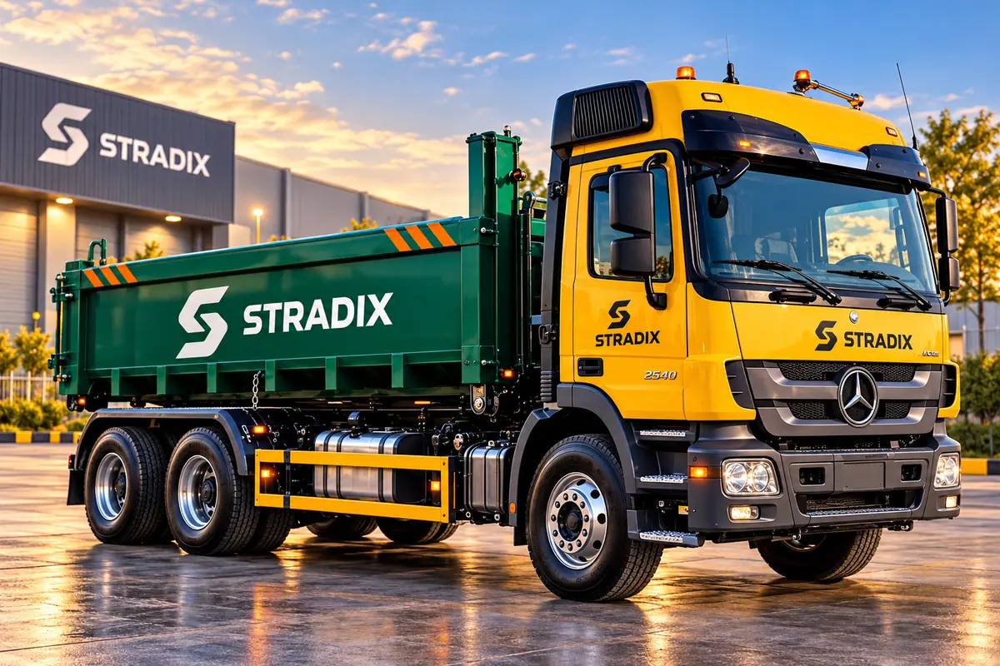
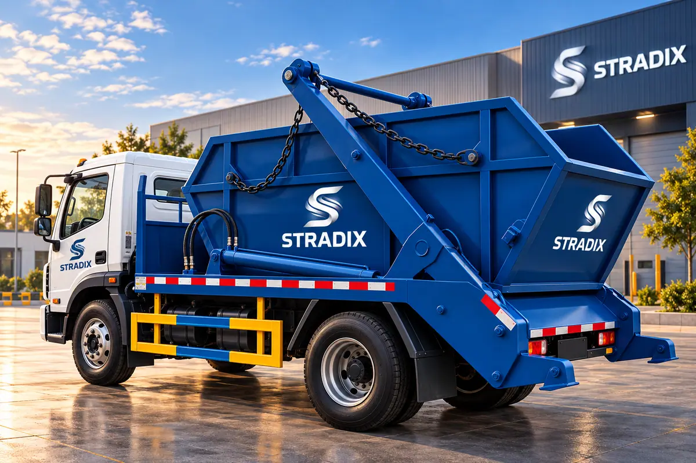
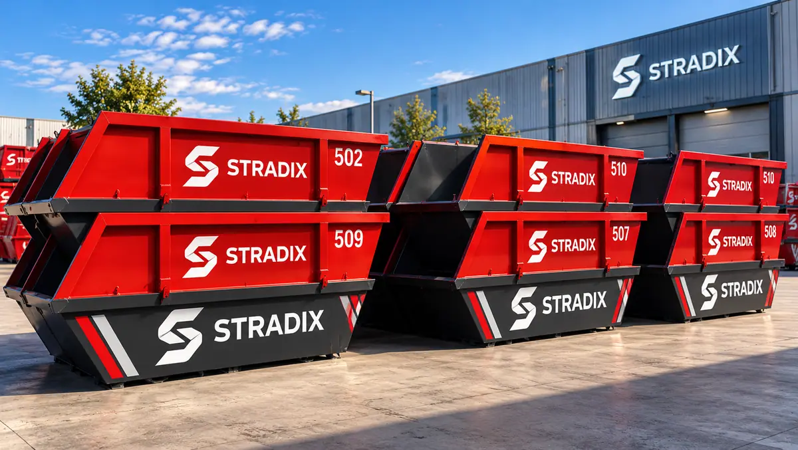
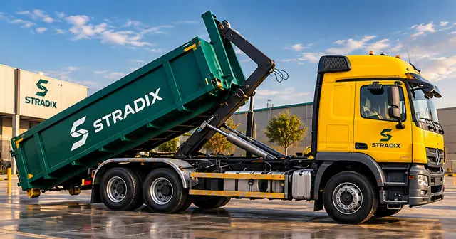
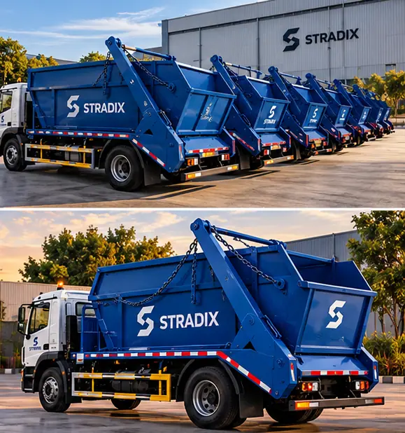
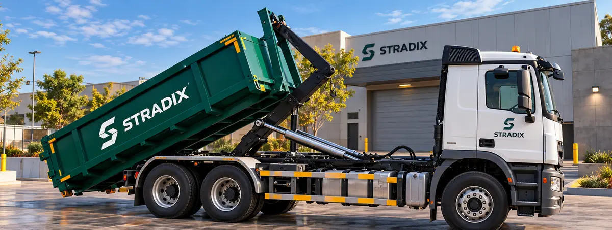
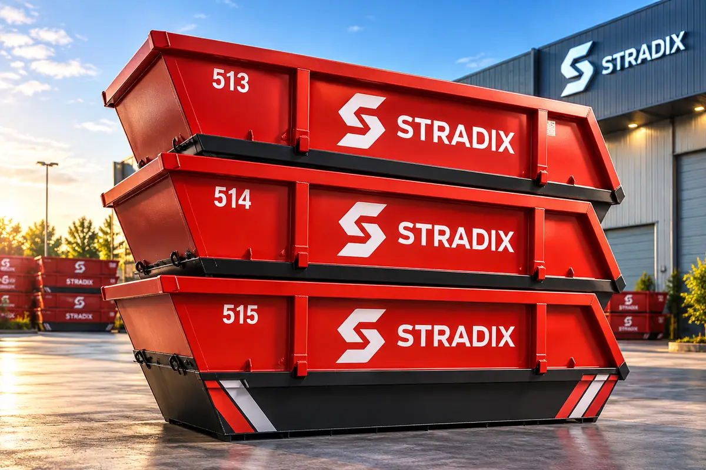
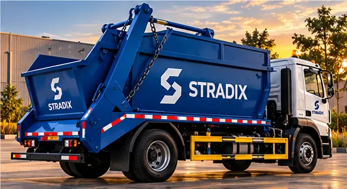
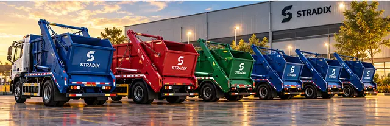

Solid waste removal, with the right container for every site.
We deliver, swap and collect S-TRADIX containers — hook-lift (roll-off) and skip containers — and transport solid waste for responsible disposal, on schedule and in full compliance with environmental regulations.
Two systems, one dependable service.
Choose the container that fits your site and waste volume — we place it, keep it moving with scheduled swaps and handle collection and disposal.

Hook-lift (roll-off) containers
Large open containers delivered and collected by hook-lift trucks — suited to sites producing high volumes of general, bulky or construction and industrial waste.
Full containers are swapped for empty ones on a schedule that matches your site, so work never stops.
- Industrial sites
- Construction & demolition
- Bulky waste
- Scheduled swaps

Skip containers & skip loaders
Compact skip containers placed where waste is generated and collected by skip-loader trucks — ideal for continuous, everyday waste from facilities, yards and workshops.
Colour-coded, numbered S-TRADIX containers make placement and tracking simple.
- Facilities & yards
- Workshops
- Everyday waste
- Numbered containers
Place, fill, swap, dispose.
Every container’s lifecycle — delivery, swaps and collection — is recorded on ZORA 360, so you always know where your containers are and when the next swap is due.
- 01
Request
Tell us the site, waste type and volume.
- 02
Place
We deliver the right container to your site.
- 03
Fill
Your team fills it as work progresses.
- 04
Swap
Full containers are swapped on schedule.
- 05
Dispose
Waste is transported for responsible disposal.
- 06
Report
Container history and proof of every trip.
Containers and trucks ready to deploy.

Skip containersNumbered S-TRADIX containers
Hook-lift truckRoll-off containers
Skip loadersEveryday waste
Hook-lift fleetHigh-volume sites
Skip containersReady for placement
Skip loaderFacilities & yards

- Dedicated fleetHook-lift and skip-loader trucks.
- Scheduled swapsContainers moved on your timetable.
- Full complianceResponsible, regulated disposal.
- Tracked on ZORA 360Container history and trip proof.
Need containers on site?
Tell us the site, waste type, expected volume and swap frequency — we’ll recommend the right containers.